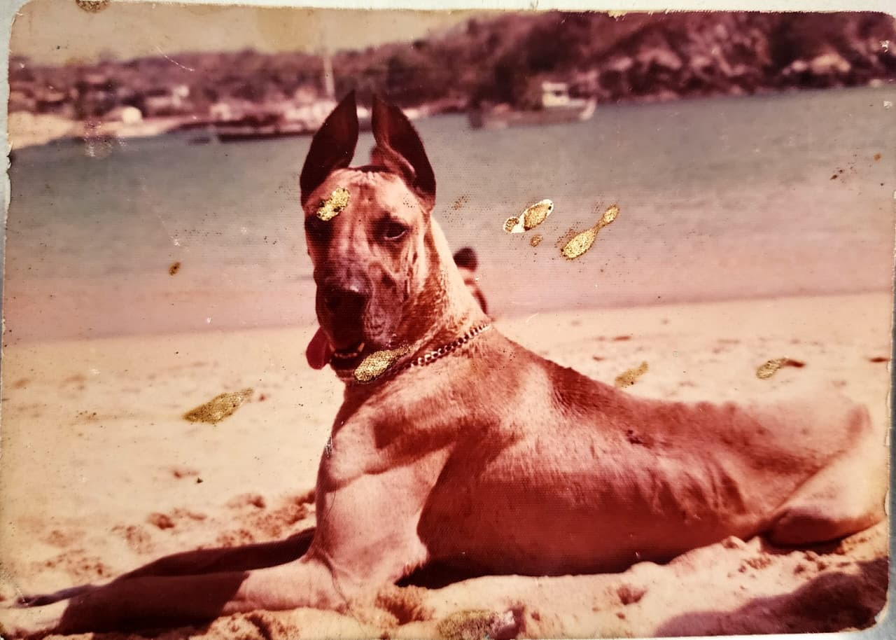

50 Años de Pasión por tus Mascotas
Cuidando la salud y el bienestar de tus amigos peludos desde 1976. Un servicio integral con la experiencia que merecen.
Agendar CitaUn legado veterinario que respalda nuestro trabajo.
En Veterinaria El Gran Danes, no solo tratamos pacientes; cuidamos a miembros de la familia desde nuestra apertura hace 50 años. La salud de tu mascota merece la sabiduría y el compromiso que solo medio siglo de dedicación puede ofrecer. En nuestra clínica, cada mascota recibe la atención experta de un médico que ha vivido y aprendido de innumerables casos. No se trata solo de medicina; es el arte de cuidar con experiencia y compasión.

MVZ. Roberto Lopez Ocaña


Médico Veterinario Zootecnista con 50 años de trayectoria impecable en medicina interna y cirugía de pequeños animales. Reconocido por una alta precisión diagnóstica y una profunda vocación de servicio. Con postgrados en urgencias y casos críticos. Comprometido con la actualización continua de técnicas quirúrgicas y medicina preventiva, fusionando la experiencia tradicional con la tecnología médica de vanguardia.
Nuestros Servicios Veterinarios
Consulta General
Chequeos preventivos para una vida larga y saludable.
Vacunación
Esquemas completos para protegerlos de enfermedades.
Consulta Especializada
Diagnostico de enfermedades.
Cirugía avanzada
Tecnicas presisas para una rapida recuperación y evitar complicaciones.
Laboratorio
Diagnósticos precisos, realizados en la misma clínica.
Diagnostico por imagen
Rayos X y ultrasonidos.
Electrocardiograma
Representación gráfica de la actividad eléctrica del corazón.
Nuestro Origen
¿Por qué El Gran Danes?
La historia del nombre de nuestra veterinaria está llena de cariño y nostalgia. Fue el fiel perro y mejor amigo del médico veterinario zootecnista Roberto López Ocaña, quien lo acompañó durante toda su trayectoria, desde los días en la facultad hasta su llegada a la costa oaxaqueña. Juntos vivieron miles de aventuras, travesuras y momentos inolvidables que dejaron una huella profunda en su vida.
En reconocimiento a ese lazo único de amistad y compañerismo, nuestra veterinaria lleva el nombre de El Gran Danés. Más que un nombre, es un homenaje a ese amigo incondicional que siempre estuvo a su lado, apoyándolo y enseñándole el valor de la lealtad. Cada día, este nombre nos recuerda la importancia del amor y respeto hacia los animales que tanto nos inspira.

Galeria de nuestros resultados